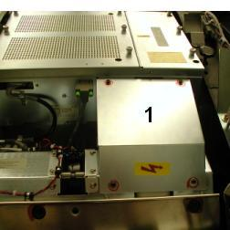
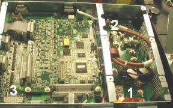

Operating Documentation
Direction 5193574-800, Rev# 22
LightSpeed 7.X Service Methods
Module Version 8.0, Version Date 7/24/13
Operating Documentation |
| Required Persons | Preliminary Reqs | Procedure | Finalization |
|---|---|---|---|
| 1 | Not Applicable | 10.0 hours | 1.0 hour |
This document provides the necessary steps to replace and configure the Generator Inverter Assembly for imaging.
| Item | Qty | Effectivity | Part# | Manufacturer | |
|---|---|---|---|---|---|
| CT Service Hoist Kit | 1 | - | 5149069 (Non-CE); 5192679 (CE) | - | |
| Torque Wrench and Socket Drive with 10mm Hex Bit, 10mm Hex Socket, 13mm Hex Socket and 12 inch Extension | 1 | - | - | - | |
| 3mm and 5mm Allen Wrenches | 1 | - | - | - | |
| Flat Blade Screw Driver | 1 | - | - | - | |
| 0.45 N-m or 4 lbf-in Torque Driver with a Flat Blade Driver Bit | 1 | - | - | - | |
| Spanner Wrench | 1 | - | - | - | |
| CT Service Post and Boom | 1 | - | - | - | |
| See Tools and Test Equipment Section for each Procedure defined in Section 4.3 | - | - | - | - | |
| Item | Qty | Effectivity | Part# | Manufacturer |
|---|---|---|---|---|
| Loctite 242 (Blue) | 1 | - | - | - |
| Transformer Oil | 1 gallon | - | T0552G, T0552F or 2164148 | - |
| Dry Wipes or Paper Towel | - | - | - | |
| Latex Gloves | - | - | - | |
| Ty-wraps | - | - | - | |
| Syringe | 1 | - | 5343337 | - |
| Item | Qty | Effectivity | Part# | Manufacturer | |
|---|---|---|---|---|---|
| Generator Inverter | 1 | - | See Gantry Parts List | See Gantry Parts List | |
| ||||
| Potential for electric shock when voltages are present. Use proper Electrical Energy Lockout/Tagout procedures before replacing components. | ||||
| ||||
| Ground connected protective ESD device must be appropriately worn while working inside the Inverter chassis. Failure to use protective ESD device correctly may result in destroyed/damaged component. | ||||
| ||||
| Follow ALL required safety and PPE procedures customary for your organization, when working on this product. | ||||
| Condition | Reference | Effectivity |
|---|---|---|
For VCT type X-ray Generation Systems. | - | - |
Recommend procedure completion by GE trained service personnel. | - | - |
Save Generator Runtime Parameters (See Save Restore Generator Runtime Parameters)
Move table to home position.
Remove right side gantry cover.
Turn off [HVDC ENABLE], [AXIAL DRIVE ENABLE] and [120 VAC ENABLE] switches on Service Switch panel.
Remove power to system. See Equipment Service - Lockout-Tagout-PPE from Safety section.
Remove scan window, gantry left side cover, gantry top covers and gantry front cover.
Rotate gantry such that High Voltage Tank is in 3 o'clock position.
Engage rotational lock. See Equipment Service - Lockout-Tagout-PPE from Safety section.
Cut Ty-wraps on Inverter and Auxiliary Box clamps and remove High Voltage cable from clamps.
Loosen High Voltage cable locking ring with spanner wrench.
Remove High Voltage cable candlestick and place a cover over candlestick.
Place a cap or paper towel in top of receptacle to prevent oil spillage and dirt from contaminating receptacle.
Remove Auxiliary Box according to Auxiliary Box Replacement, Section 4.1, Steps 10 - 13.
Disengage rotational lock. See Equipment Service - Lockout-Tagout-PPE from Safety section.
Rotate gantry such that EMC Box cover, between Inverter and High Voltage Tank, can be easily remove (See Item 1 in Illustration 1).
Illustration 1: EMC Box Cover

Remove EMC Box cover between Inverter and High Voltage Tank with a 3mm Allen Wrench ( See Item 1 in Illustration 1).
| NOTE: | Keep M4 screws and washers. |
Rotate gantry such that Inverter is in 2:30 o'clock position.
Engage rotational lock. See Equipment Service - Lockout-Tagout-PPE from Safety section.
Detach High Voltage cable clamps from Inverter front panel with a 3mm Allen Wrench.
| NOTE: | Keep clamp hardware pieces. |
Detach cable clamps from Inverter front panel with 3mm and 5mm Allen Wrenches.
| NOTE: | Keep clamp hardware pieces. |
Disconnect five cables from Inverter front panel.
Remove Inverter covers using a flat blade screw driver.
Wearing a ground connected protective ESD device, detach High Voltage Inverter/Tank connections from inside Inverter with a 10mm hex socket drive and carefully slip cable out of chassis (See Item 1 in Illustration 2).
| NOTE: | Keep washers and nuts. |
Illustration 2: Inside Inverter

Detach HVDC choke connection from inside Inverter with a 10mm and 13mm hex socket drive and carefully slip cables out of chassis (See Item 2 in Illustration 2).
| NOTE: | Keep washers and nuts.. |
Detach J12 cable clamp from Inverter bottom panel with 3mm Allen Wrench.
| NOTE: | Keep clamp hardware pieces. |
Disconnect J2 cable from Inverter bottom panel.
Detach J12 connector from inside Inverter and slip cable out of chassis (See Item 3 in Illustration 2).
Insert lifting post into gantry frame and attach boom and hoist.
Attach hoist hook to Inverter lifting point.
| NOTE: | Remove all slack in chain and apply light tension. |
Carefully remove four long M12 mounting bolts and washers, located inside Inverter chassis, with a 10mm hex bit socket drive and 12 inch extension.
| NOTE: | If bolts are supplied with new Inverter, throw away old bolts. |
| NOTE: | If bolts are not supplied with new Inverter, reuse existing bolts. Make certain to thoroughly clean all dried Loctite from bolts. |
| NOTE: | If washers fall into chassis, lightly reattach inverter covers before removing inverter chassis so they do not fall into gantry. Once Inverter chassis has been removed, detach inverter covers and remove washers from chassis. |
Carefully swing inverter free of gantry and lower to floor towards gantry right side.
Detach hoist hook from Inverter lifting point.
Place new Inverter crate near gantry front-right side and open top of crate.
Attach hoist hook to new Inverter lifting point.
Using hoist, carefully, lift new Inverter out of crate, swing and position on to gantry.
| NOTE: | As Inverter is position on to gantry, component should fall into place. |
Remove Inverter covers using a flat blade screw driver.
Carefully fasten Inverter to gantry by inserting four long M12 mounting bolts and washers through mounting holes, located inside chassis, with a 10mm hex bit socket torque wrench and 12 inch extension.
Tighten each long M12 mounting bolt to the following torque values.
| 48.9 lbf-ft | 66.4 N-m | 586.8 lbf-in | 677.1 kg-cm |
Detach hoist hook from Inverter lifting point.
Attach hoist hook to old Inverter lifting point.
Lift old Inverter into crate, detach hoist hook from lifting point, and prepare for storage/shipping.
Remove hoist/boom/post assembly from gantry.
Wearing a ground connected protective ESD device, route and attach HVDC choke cables to Inverter terminals (Red cable to right terminal and Black cable to left terminal) (See Item 2 in Illustration 2)
| NOTE: | Use washers and nuts from Section 4.1. |
Tighten M6 mounting nut (right terminal) with a 10mm hex bit socket torque wrench, to the following torque values.
| 3.0 lbf-ft | 4.0 N-m | 35.4 lbf-in | 40.8 kg-cm |
Tighten M8 mounting nut (left terminal) with a 13mm hex bit socket torque wrench, to the following torque values.
| 5.8 lbf-ft | 7.9 N-m | 70.0 lbf-in | 80.8 kg-cm |
Apply small amount of Loctite 242 to end 3 threads of M3 screw used to secure High Voltage Inverter/Tank cable “P” clamp. Route and attach High Voltage Inverter/Tank cable to terminals inside Inverter. Torque to values listed in step 27 (See Item 1 in Illustration 2)
| NOTE: | Use washers and nuts from Section 4.1. |
Tighten M6 mounting nuts with a 10mm hex bit socket torque wrench, to the following torque values.
| 3.0 lbf-ft | 4.0 N-m | 35.4 lbf-in | 40.8 kg-cm |
Route and connect J12 cable to inside Inverter connector (See Item 3 in Illustration 2).
Attach J12 cable clamp to Inverter bottom panel with 3mm Allen Wrench.
Connect J2 cable to Inverter bottom panel.
| ||||
| To insure that mandatory Safety and Regulatory compliance is
achieved, carefully follow these instructions for Jedi VCT INVERTER
FRU label attachment 1. If you are replacing the inverter 2281950-4 in Jedi VCT:
| ||||
Attach inverter small cover as follows.
Slide cover slots over Inverter chassis top and bottom pins.
Lower cover into position.
Align each captive screw to the hole in the Inverter chassis and turn the screw clockwise until the screw engages with the hole.
| NOTE: | Captive Screw misalignment and/or over tightening could break the screw and get lodged in the inverter chassis causing irreparable damage. In the event that this happens, replace Inverter. |
| NOTE: | Complete this step for all captive screws before performing step (d). |
Tighten each captive screw with a flat blade bit torque driver to 0.45 N-m or 4.0 lbf-in.
Attach inverter large cover as follows.
Position Inverter large cover over chassis opening.
Starting with the lower left hand corner captive screw and following the order shown in Illustration 4, align each captive screw to the hole in the Inverter chassis and turn the screw clockwise until the screw engages with the hole.
| NOTE: | Captive Screw misalignment and/or over tightening could break the screw and get lodged in the inverter chassis causing irreparable damage. In the event that this happens, replace Inverter. |
| NOTE: | Complete this step for all captive screws before performing step (c). |
Starting with the lower left hand corner captive screw and following the order shown in Illustration 4, tighten each captive screw with a flat blade bit torque driver to 0.45 N-m or 4.0 lbf-in.
Illustration 4: Inverter Large Cover Installation

Connect five cables to Inverter front panel.
Attach cable clamps to Inverter front panel with a 3mm and 5mm Allen Wrenches.
Attach High Voltage cable clamps to Inverter front panel with a 3mm Allen Wrench.
Disengage rotational lock. See Equipment Service - Lockout-Tagout-PPE from Safety section.
Rotate gantry such that EMC Box cover, between Inverter and High Voltage Tank, can be easily installed.
Install EMC Box cover between Inverter and High Voltage Tank and fasten with four M4 washers and screws from Section 4.1.
Tighten each M4 screw with a 3mm hex bit socket torque wrench, to the following torque values.
| 1.7 lbf-ft | 2.3 N-m | 20.4 lbf-in | 23.5 kg-cm |
Rotate gantry such that Inverter is in 2:30 o'clock position.
Engage rotational lock. See Equipment Service - Lockout-Tagout-PPE from Safety section.
Install Auxiliary Box according to Auxiliary Box Replacement, Section 4.2, Steps 2 - 7.
Perform Securing HV Cable.
Restore power to system. See Equipment Service - Lockout-Tagout-PPE from Safety section.
Turn on [120 VAC ENABLE], [AXIAL DRIVE ENABLE], and [HVDC ENABLE] switches on Service Switch panel.
Press [ESTOP RESET] on Service Switch panel and wait until scan hardware is reset.
Restore Generator Runtime Parameters (See Save Restore Generator Runtime Parameters)
| NOTE: | If Save Generator Runtime Parameters of Section 4.1 failed, perform Reset TnT (Generator and Tube TnT Data), Filament Calibration |
Turn off [HVDC ENABLE], [AXIAL DRIVE ENABLE], and [120 VAC] switches on Service Switch panel.
Install gantry front cover, gantry top covers, gantry left side cover and scan window.
Turn on [120 VAC], [AXIAL DRIVE ENABLE], and [HVDC ENABLE] switches on Service Switch panel.
Press [ESTOP RESET] on Service Switch panel and wait until scan hardware is reset.
Install right side gantry cover.
Save Generator Runtime Parameters (See Save Restore Generator Runtime Parameters)
Save System State